Arte com Círculos

Desenho com Cardioides

Cardioide em linhas
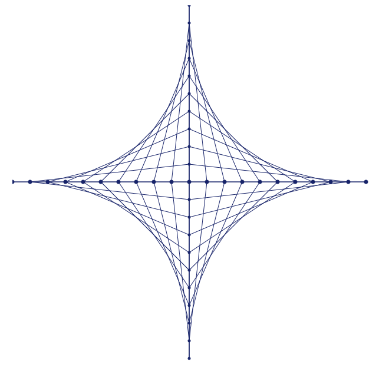Tiling Hexagonal

Gere o seu Crivo de Erastótenes
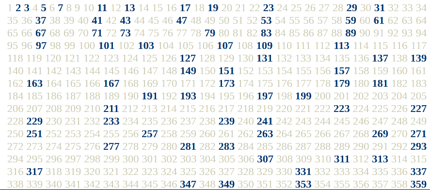O Jogo do Trim
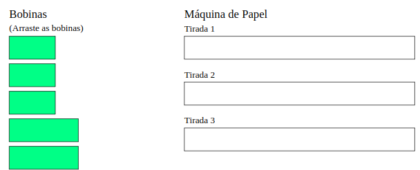Padrões Listrados
Crie Arte com Retangulos
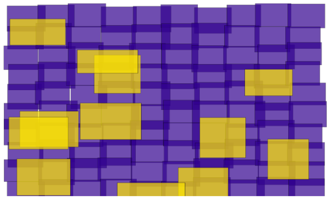Random Walk

Triângulo de Pascal

Espiral de Arquimedes
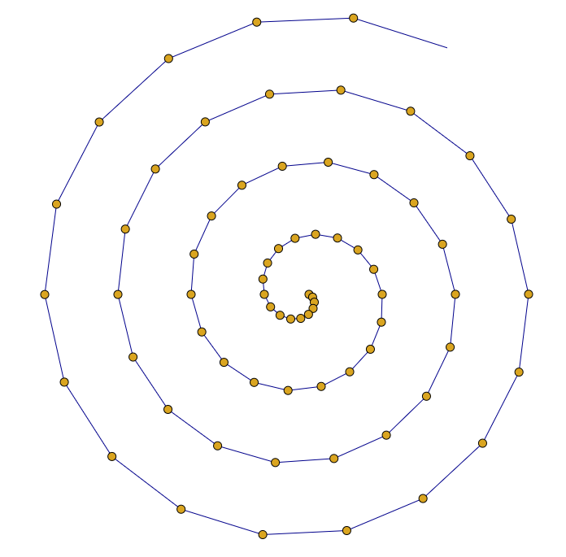Visualize a soma 1/2 + 1/4 + 1/8 + ... = 1

A Espiral Musical
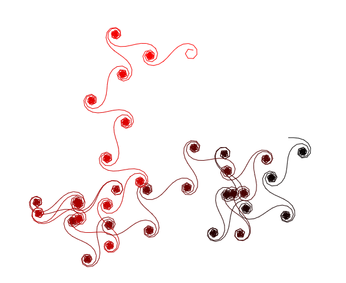A Espiral de Círculos

Monte Carlo Pi
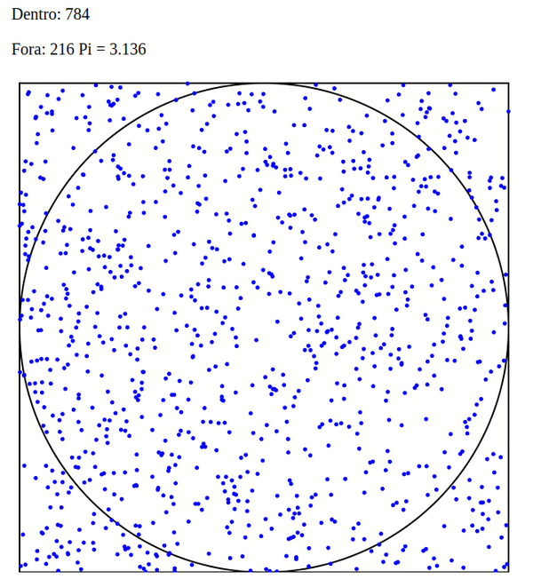Padrões em Círculos
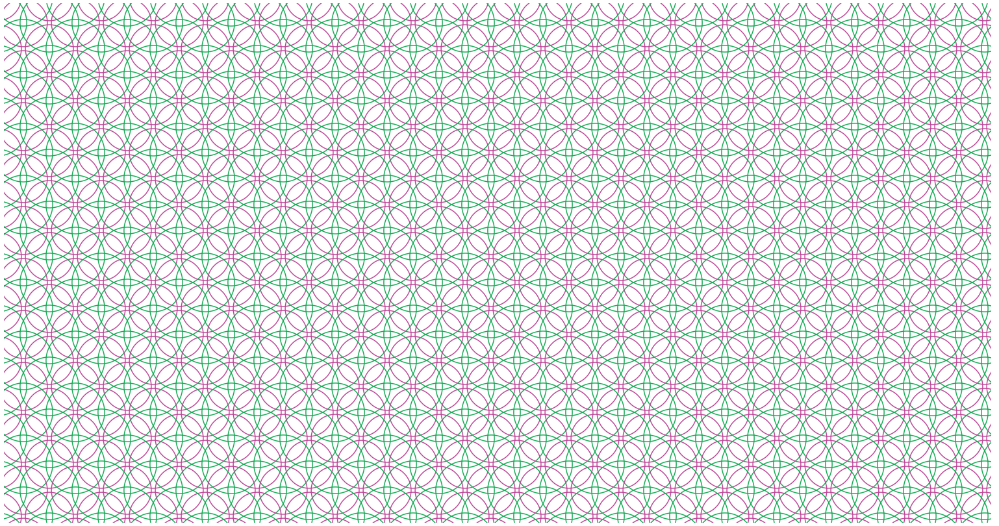Método da Exaustão para área do Círculo

A Colmeia dos Números Primos
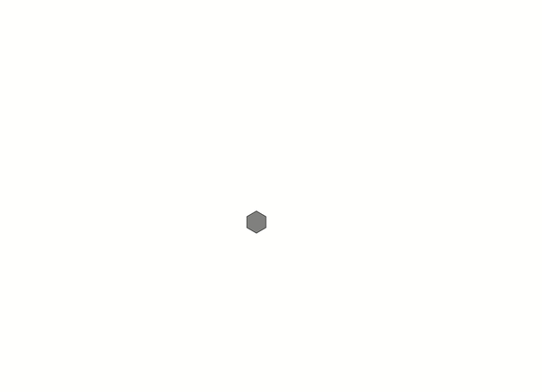A Espiral de Ulam
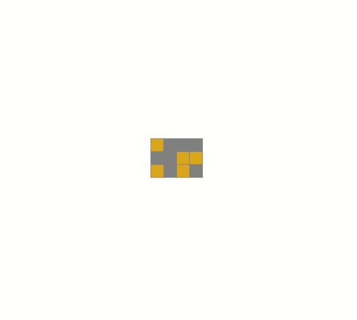Random Tiling V1
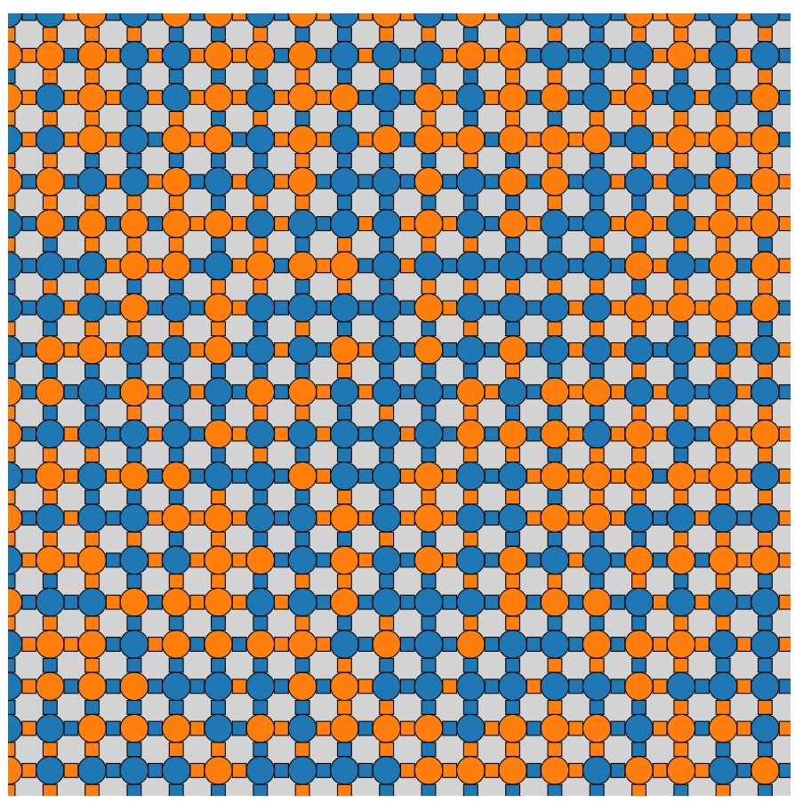Simulador distribuição gaussiana
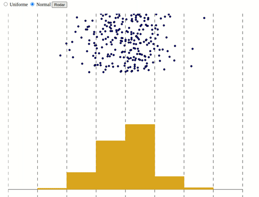Quadrados Mágicos de qualquer tamanho

Tiling um Quarto
Tiling de tiras
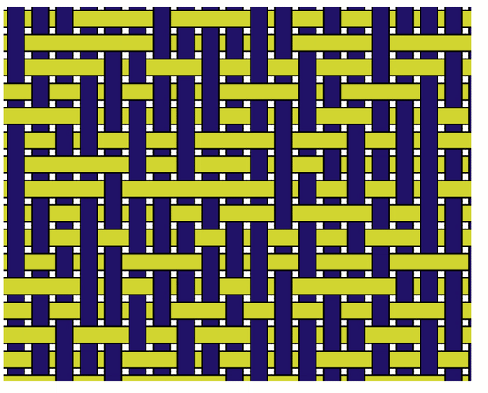Cardióides Circulares

Tiling Octagonal
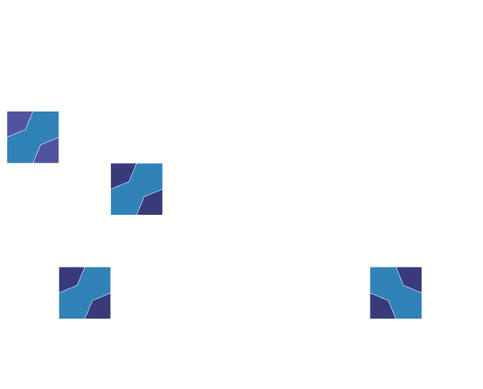Tiling Diagonal
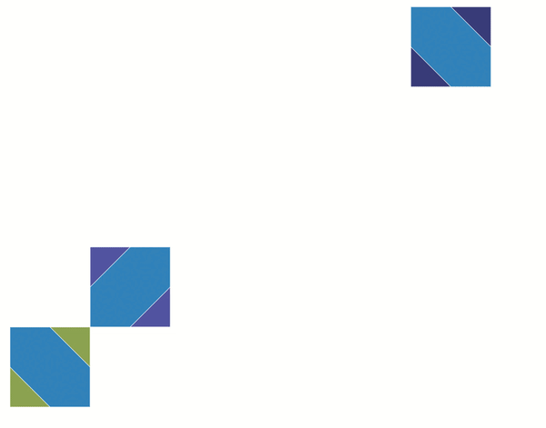Visualização de Pi

Curvas de Bezier
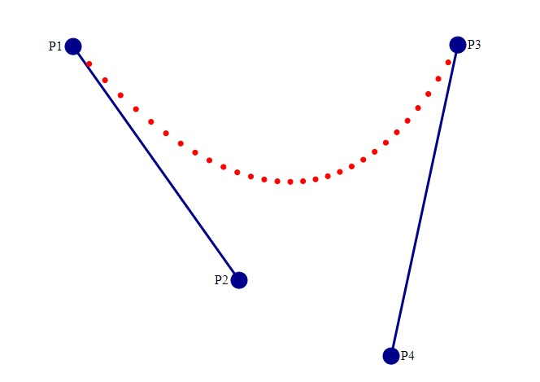A árvore de Pitágoras

Estrelas piscantes
Sierpinski Retangular

Sierpinski Triangular

O conjunto de Cantor

Lights Out
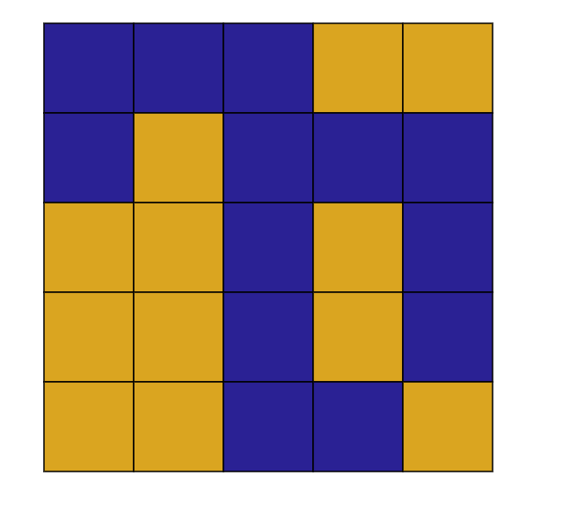Sorteador aleatório
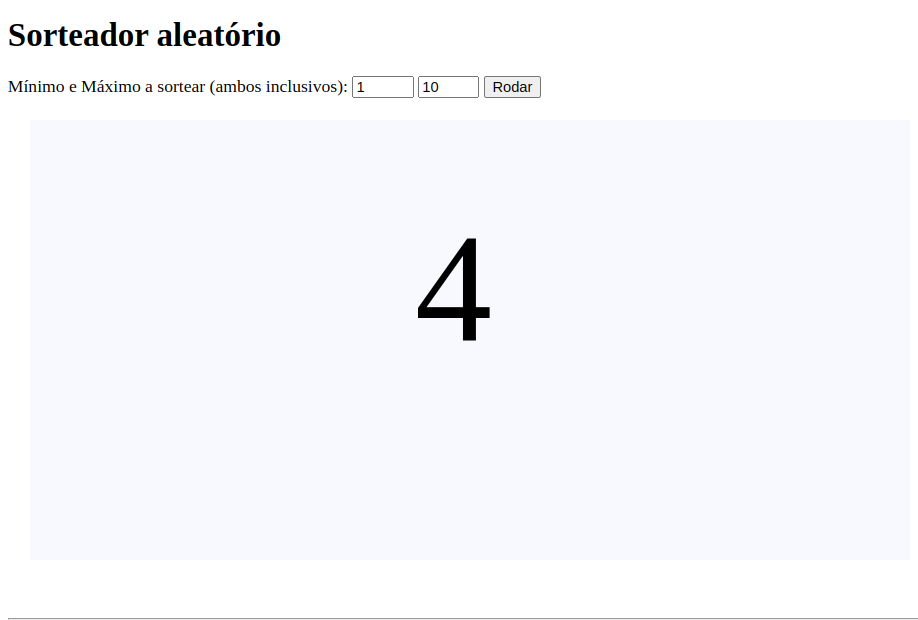Núm. Felizes
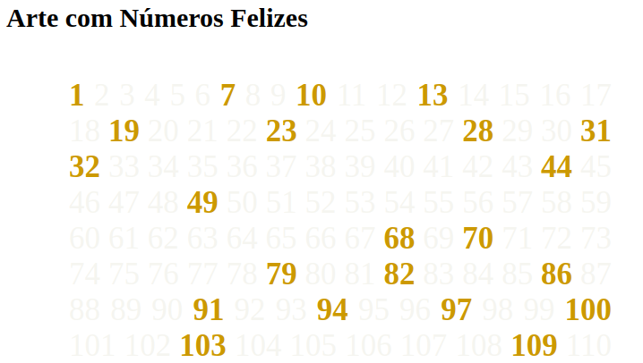Calendário semanas
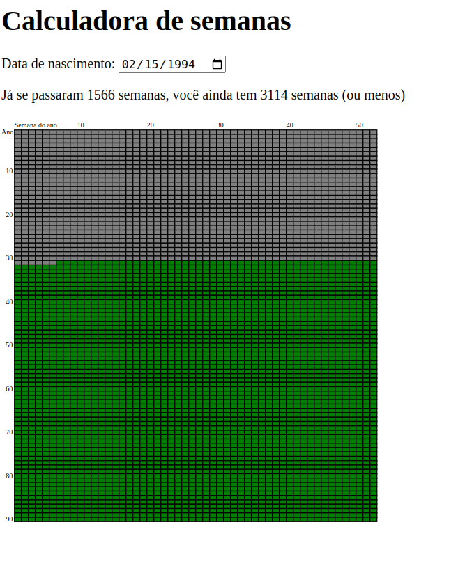Gráf. Porcentagem
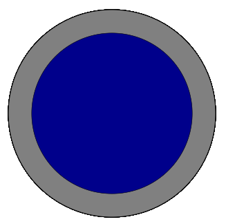Ret. Fibo
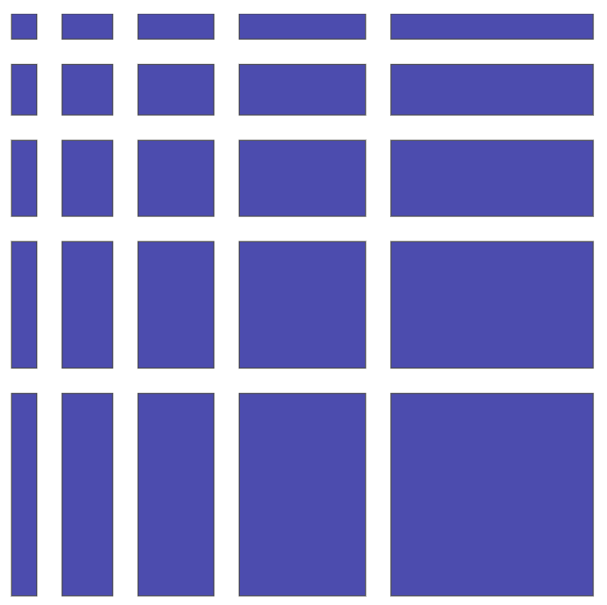Grid e Diagonal
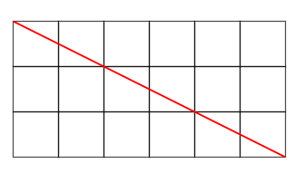Código em Colunas
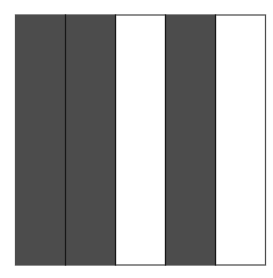Prova de Leonardo
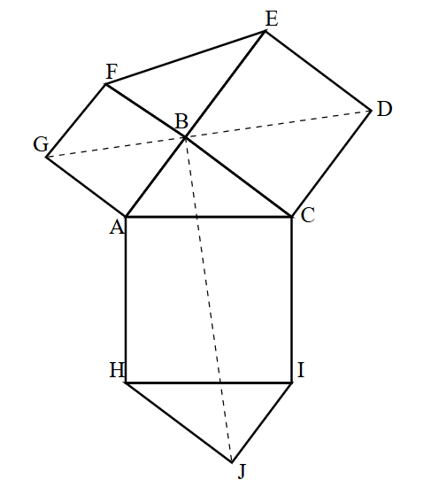